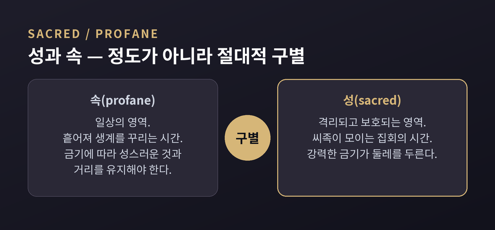
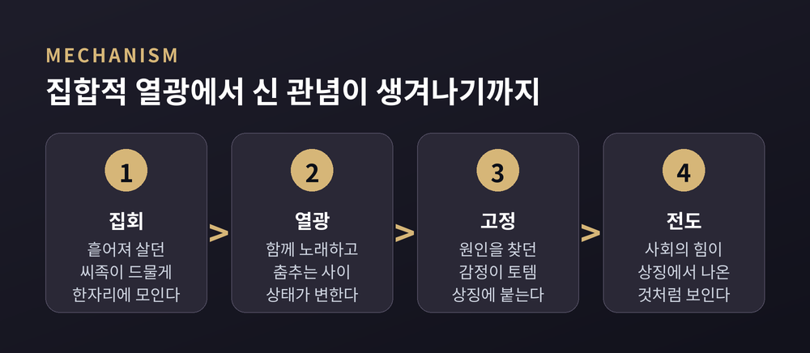
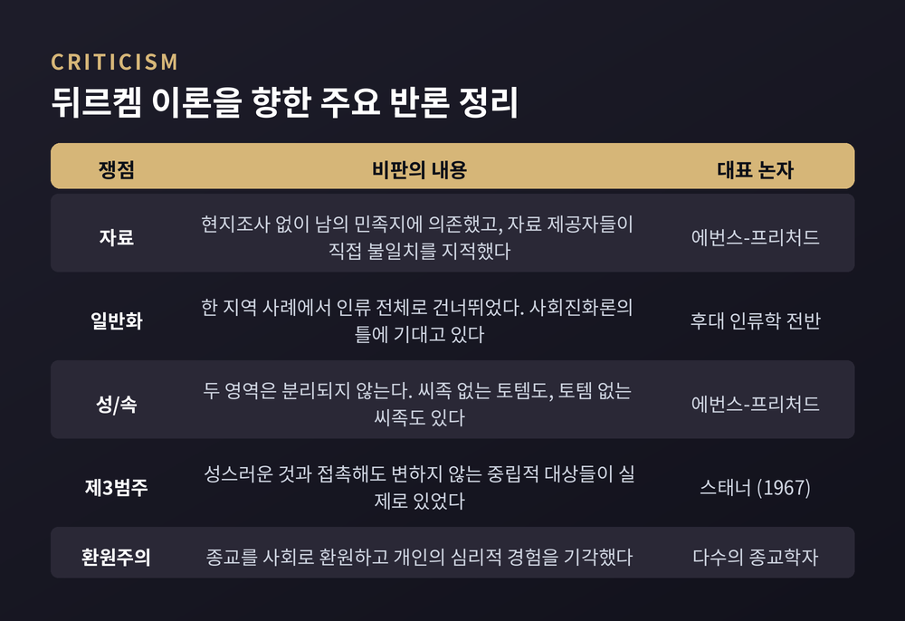

신 없이 종교를 정의한 1912년의 시도 — 성과 속, 토템과 집합적 열광, 그리고 "신은 곧 사회"라는 테제가 견뎌온 백 년의 반론
이번 글에서는 에밀 뒤르켐이 1912년에 내놓은 『종교생활의 원초적 형태』를 정리해 보겠습니다. 신 없이도 종교를 정의할 수 있는가, 그리고 "신은 곧 사회"라는 유명한 문장이 실제로 무엇을 뜻하는가. 이 두 가지를 중심으로 따라가 보겠습니다.
세 줄 요약
에밀 뒤르켐(1858~1917)은 사회학의 창건자 중 한 사람으로 꼽힙니다. 『종교생활의 원초적 형태』는 그가 1912년에 발표한 마지막 주저입니다.
그가 종교를 다루기 시작한 것은 1899년 무렵부터였습니다. 중심 저작이 나오기까지는 십수 년이 더 걸린 셈입니다.
전환점은 1895년이었습니다. 뒤르켐 본인의 회고에 따르면, 그는 이 해에 종교가 사회생활에서 차지하는 결정적 역할을 처음 분명히 자각했습니다. 그는 이 경험을 자신의 지적 여정에 경계선을 그은 사건으로 표현했습니다.
계기는 스코틀랜드 셈어학자 윌리엄 로버트슨 스미스의 『셈족의 종교에 관한 강의』(1889)였습니다. 여기서 뒤르켐은 결정적인 구분 하나를 얻습니다. 종교는 공적이고 사회적인 제도이고, 주술은 사적이고 개인적인 기술이라는 구분입니다.
이 구분이 왜 중요한지는 곧 드러납니다. 뒤르켐이 종교를 정의하는 방식 전체가 여기에 걸려 있기 때문입니다.
뒤르켐은 정의를 세우기 전에 먼저 두 가지 통념을 걷어냅니다.
첫째로 걷어낸 것은 "종교는 초자연적이고 신비로운 것을 다룬다"는 생각입니다. 그는 반대 증거를 듭니다. 이른바 원시 종교가 설명하려 했던 것은 오히려 가장 규칙적인 현상들이었습니다. 별의 운행, 계절마다 돌아오는 식생의 성장, 종의 존속 같은 것들입니다. 종교적인 것이 비범한 것과 겹친다는 말은 사실이 아니라는 결론이 나옵니다.
둘째로 걷어낸 것이 더 중요합니다. 신이나 영적 존재로 종교를 정의하는 방식입니다.
뒤르켐이 든 반례는 명확합니다. 신 관념이 거의 부재한 거대 종교들이 실제로 존재한다는 것입니다. 그는 불교, 자이나교, 브라만교를 직접 거명했습니다. 이 전통들에서는 기도나 공희 같은 절차가 기껏해야 부차적 역할만 합니다.
반례는 하나 더 있습니다. 신을 인정하는 종교 안에서도 그 관념과 무관한 의례가 많다는 것입니다. 어떤 경우에는 관념이 의례에서 나온 것이지 그 반대가 아닙니다.
그래서 뒤르켐은 이렇게 정리합니다. 모든 종교적 힘이 신적 인격에서 나오는 것은 아니며, 종교는 신이나 영의 관념 이상이라는 것입니다.
남은 자리에 그가 세운 정의가 이것입니다.
"종교란 성스러운 것들, 즉 구별되고 금지된 것들과 관련된 신념과 관행의 통일된 체계이며, 그 신념과 관행은 그것을 따르는 모든 이들을 교회라 불리는 하나의 도덕 공동체로 결속시킨다."
한 가지 오해를 먼저 풀어두겠습니다. 여기서 말하는 "교회"는 기독교의 교회가 아닙니다. 신자들을 하나로 묶는 도덕 공동체 일반을 가리키는 기술적 용어입니다.
주술이 종교에서 빠지는 이유도 여기서 나옵니다. 주술사와 그를 찾는 사람들 사이에는 지속적인 유대가 없습니다. 같은 신을 믿는 이들이 이루는 공동체 같은 것이 생기지 않습니다.
뒤르켐은 알려진 모든 종교적 신념에 하나의 공통점이 있다고 봤습니다. 세계를 두 부류로 나눈다는 점입니다. 성(sacred)과 속(profane)입니다.
주목할 점은 이 구분의 성격입니다. 정도의 차이가 아니라 절대적 구별입니다. 뒤르켐은 인간 사유의 역사 전체에서 이토록 근본적으로 대립하는 두 범주의 사물은 다른 예가 없다고 썼습니다.
체계의 구성 요소는 이렇게 정리됩니다. 성스러운 것은 강력한 금기로 격리되고 보호되는 것입니다. 속된 것은 그 금기에 따라 거리를 유지해야 하는 것입니다. 종교적 신념은 성스러운 것의 본성을 표현하는 표상이고, 종교적 의례는 그 앞에서 어떻게 행동해야 하는지 정하는 규칙입니다.
여기서 가장 중요한 대목이 나옵니다. 성스러움은 사물에 원래 들어 있는 속성이 아닙니다. 어떤 것이 성스러운 이유는 그것이 본래 신적 성질을 지녀서가 아니라, 사회가 집합적으로 거기에 특별한 의미를 부여했기 때문입니다.
돌 하나, 나무 조각 하나가 성스러워질 수 있습니다. 조건은 단 하나, 사람들이 함께 그렇게 여기는 것입니다.

뒤르켐의 전략은 분명했습니다. 종교의 본질을 보려면 가장 단순한 형태로 내려가야 한다는 것입니다.
발달한 종교는 긴 진화의 산물이라 여러 원리가 겹겹이 뒤섞여 있습니다. 그래서 그는 관찰 가능한 종교들을 공통 요소로 분해한 뒤, 다른 것들이 파생되어 나온 하나를 찾아야 한다고 봤습니다.
그가 고른 것이 토템 숭배였습니다.
자료는 볼드윈 스펜서와 프랜시스 길런의 『중앙 오스트레일리아의 원주민 부족들』(1899)이었습니다. 분석 대상은 중앙 호주의 아룬타(오늘날 아렌테) 토템 씨족이었습니다.
여기서 하나 짚어야 할 사실이 있습니다. 뒤르켐은 현지조사를 한 번도 하지 않았습니다. 그는 다른 사람이 출판한 민족지에 전적으로 의존했습니다. 이 선택이 훗날 가장 큰 약점이 됩니다.
뒤르켐이 관찰한 토테미즘의 특징은 이렇습니다. 씨족 구성원은 서로 친족으로 여겨지지만, 그 유대는 혈연이 아니라 토템이라는 이름을 공유한다는 데 있습니다. 씨족원은 토템 동식물을 죽이거나 먹을 수 없습니다.
그런데 그는 토테미즘을 동물 숭배로 보는 해석에 반대했습니다. 인간과 토템의 관계는 숭배자와 신의 관계라기보다 같은 가족 구성원 사이의 관계에 가깝다고 봤습니다.
결정적 관찰은 따로 있었습니다. 성스러움이 가장 강하게 깃든 것은 토템 동물 자체가 아니라, 토템을 새긴 문장과 조각된 표상이었다는 점입니다. 실물보다 상징이 더 성스러웠습니다.
이 관찰에서 그는 씨족 전체에 퍼진 비인격적 힘, 이른바 토템 원리를 끌어냅니다. 그리고 묻습니다. 이 힘은 어디서 오는가.
뒤르켐의 답은 사회생활의 리듬에 있었습니다.
호주 씨족의 삶은 두 국면이 번갈아 나타납니다. 하나는 흩어져 수렵과 채집을 하는 긴 분산기입니다. 다른 하나는 씨족 전체가 드물게 모이는 짧고 강렬한 집합기입니다.
집합기에 일어나는 것이 집합적 열광(effervescence collective)입니다. 함께 노래하고 춤추고 외치는 동안, 개인은 평소와 전혀 다른 상태로 옮겨갑니다. 몸이 가벼워지고 힘이 솟는 느낌을 받습니다.
뒤르켐은 이 두 국면의 교대가 성과 속이라는 두 세계의 관념을 낳았다고 봤습니다. 성/속 이분법의 뿌리가 사회생활의 박자 자체에 있다는 주장입니다.
문제는 그다음입니다. 고양된 개인은 이 변화의 원인을 찾으려 합니다. 진짜 원인은 집회 그 자체지만, 그것은 너무 복잡해서 눈에 잡히지 않습니다.
대신 눈앞에는 명료하고 구체적인 것이 있습니다. 새겨진 토템 상징입니다. 사람들은 자기 안에서 일어난 혼란스러운 사회적 감정을 그 구체적 대상에 고정시킵니다. 그리하여 사회의 힘과 권위가 그 상징에서 뿜어져 나오는 것처럼 보이게 됩니다.
뒤르켐이 남긴 비유가 이 과정을 압축합니다. 깃발을 위해 죽는 병사는 실은 자기 나라를 위해 죽는 것입니다. 마찬가지로 자기 토템을 숭배하는 씨족원은 실은 자기 씨족을 숭배하는 것입니다.
한 걸음 더 나아간 주장도 있습니다. 상징은 감정을 표현하기만 하는 것이 아니라 감정을 만들어낸다는 것입니다. 그는 사회가 모든 시기에 오직 방대한 상징체계에 의해서만 가능해진다고 썼습니다.

이제 가장 유명한 테제에 도착했습니다. 신은 신격화된 사회 이상의 것이 아니라는 명제입니다.
뒤르켐이 든 근거는 이렇습니다. 사회는 신적인 것의 관념을 불러일으킬 모든 조건을 갖추고 있습니다. 사회는 그 구성원에게 신이 숭배자에게 그러한 것과 같은 존재입니다. 물리적으로도 도덕적으로도 개인보다 우월합니다. 그래서 사람은 사회의 힘을 두려워하고 그 권위를 존중합니다.
동시에 사회는 개인의 의식 안에서만 존재할 수 있습니다. 그래서 우리에게 희생을 요구하는 한편, 우리 각자 안의 힘을 주기적으로 되살려 놓습니다. 그 힘이 가장 뚜렷하게 감지되는 순간이 바로 집합적 열광의 시간입니다.
여기서 흔한 오독 하나를 짚고 넘어가겠습니다.
뒤르켐은 종교가 환상이라고 말하지 않았습니다.
그는 오히려 당대의 공포 기원설에 명시적으로 반대했습니다. 흄과 타일러, 프레이저가 각각의 방식으로 옹호한 이론이었습니다. 뒤르켐은 로버트슨 스미스를 따라, 사람들이 자기 신을 적대적이거나 두려운 존재로 여기지 않는다고 봤습니다. 신은 오히려 친구이자 친족이며, 신뢰와 안녕의 감각을 준다는 것입니다.
그리고 그는 그 감각이 환각이 아니라고 못 박습니다. 오해되었을지언정 그 신념들이 대응하는 실재하는 도덕적 힘이 분명히 있고, 숭배자는 거기서 실제로 자기 힘을 끌어온다는 것입니다.
정리하면 그의 주장은 "종교는 거짓이다"가 아닙니다. "종교적 경험의 대상은 실재한다. 다만 그 실재는 신자들이 생각하는 것과 다른 무엇이다"에 가깝습니다. 이 구분을 놓치면 뒤르켐은 단순한 폭로론자로 잘못 읽힙니다.
이 책의 표면적 주제는 종교입니다. 그러나 더 큰 목표는 따로 있었습니다. 칸트에 맞서 사고 범주의 사회적 기원을 입증하는 것이었습니다.
뒤르켐이 다룬 범주는 여섯 가지입니다. 분류, 힘, 인과, 총체성, 공간, 시간입니다.
당대에는 두 가지 선택지가 있었습니다. 범주가 경험에서 구성된다는 경험론과, 범주가 경험에 논리적으로 앞선다는 선험론입니다. 뒤르켐은 양쪽을 모두 거부합니다. 경험론은 범주에서 보편성을 빼앗고, 선험론은 단언할 뿐 설명하지 못한다고 봤습니다.
그가 제시한 제3의 길은 이렇습니다. 범주는 역사적으로 산출되었고, 인간 제도의 기원과 얽혀 있다는 것입니다.
구체적으로는 이렇게 이어집니다. 공간 범주는 사회 집단의 공간적 배치에서 나왔습니다. 시간 범주는 집회와 의례가 만드는 사회생활의 주기에서 나왔습니다. 인과 범주는 사회적 힘과 도덕적 의무를 겪는 내적 경험에서 나왔습니다.
범주는 개인의 발명품도, 타고난 보편자도 아니라는 것입니다. 집합표상이며, 세대를 거쳐 전수되고 개인이 자라며 흡수하는 것입니다.
여기까지가 뒤르켐의 논증입니다. 이제 반대편을 봐야 합니다. 이 책은 정전이 된 만큼이나 오래 비판받아 왔습니다.
첫째, 자료가 부정확했습니다. 뒤르켐이 의존한 스펜서와 길런 본인들이 그의 이론적 초상과 자신들이 실제 관찰한 것 사이의 불일치를 지적했습니다. 에번스-프리처드는 뒤르켐이 자료를 끌어온 저자들이 저지른 오류만으로도 민족지 방법론 연구를 한 편 쓸 수 있을 것이라고 했습니다. 뒤르켐이 아룬타에게서 읽어낸 개념 중 일부가 정작 그의 민족지 자료에는 없다는 지적도 있습니다. 이론이 자료를 앞질렀다는 뜻입니다.
둘째, 일반화의 도약이 큽니다. 한 지역의 사례에서 인류 전체의 종교로 건너뛰는 것은 중대한 방법론적 비약입니다. 게다가 "가장 단순한 종교"라는 범주 자체가 19세기 사회진화론의 틀에 기대고 있습니다. 특정 사회를 살아 있는 화석처럼 다루는 시각은 오늘날 인류학에서 폐기되었습니다.
셋째, 성/속 이분법이 흔들립니다. 에번스-프리처드는 성과 속이 너무 긴밀히 얽혀 분리할 수 없다고 봤고, 이분법 자체가 거짓이라고 주장했습니다. 그는 토템은 있는데 씨족이 없는 민족도 있고, 씨족은 있는데 토템이 없는 민족도 있다고 지적했습니다. 뒤르켐 논증의 연결 고리를 직접 겨냥한 반박입니다.
스태너의 1967년 비판은 한층 아픕니다. 그는 성/속 구분이 정작 그 근거가 되었다는 호주 종교 자체에 모호함 없이 적용되지 않는다는 것을 보였습니다. 원주민의 개념 세계는 두 부류로 깔끔하게 나뉘지 않았습니다. 성스러운 것과 접촉해도 아무 변화가 없는, 완전히 중립적인 대상들이 있었습니다. 스태너는 제3의 범주가 필요하다고 제안했습니다.
넷째, 환원주의 논란입니다. 종교를 사회적 경험의 상징적 표현으로 동일시하고 개인의 심리적 경험을 기각한 점은 지속적인 비판 대상이었습니다. 에번스-프리처드는 뒤르켐을 전투적 무신론자로 평가하기도 했습니다. 다만 저자의 동기에 관한 평가와 논증에 대한 반박은 구별해야 공정합니다.

비판이 이만큼 쌓였는데도 이 책은 살아남았습니다. 개별 주장이 틀린 자리에서도 개념은 계속 쓰였기 때문입니다.
레비스트로스는 분류와 신화에 관한 뒤르켐의 발상을 받아들이고 수정했습니다. 모스와 파슨스도 이 계보에 놓입니다.
로버트 벨라의 시민종교 논의는 뒤르켐의 집합표상과 집합적 열광을 현대 국가에 옮겨 놓은 작업입니다. 오늘날 민족주의와 사회운동, 세속 이데올로기 연구에서 이 개념들은 널리 재해석되고 있습니다.
랜들 콜린스의 상호작용 의례 사슬은 뒤르켐을 가장 작은 단위로 끌어내린 사례입니다. 고프먼이 의례를 일상 대화의 차원으로 세속화했고, 콜린스가 그것을 일반 이론으로 세웠습니다. 그가 꼽은 의례 성립의 조건은 네 가지입니다. 최소 두 사람의 신체적 근접, 참여자와 외부인을 가르는 명확한 경계, 공통 대상에 대한 주의 집중, 그리고 정서적 강도입니다.
예전에는 뒤르켐을 읽는 일이 주로 부족 사회를 이해하는 작업이었습니다. 지금은 콘서트장과 스포츠 경기장, 광장의 집회를 설명하는 도구로 쓰입니다. 집합적 열광은 실제로 집단 모임과 시위를 대상으로 한 메타분석 연구까지 나올 만큼 경험적 개념이 되었습니다.
그는 종교가 사라질 것이라고 보지 않았습니다.
기독교의 영향력이 줄어든 자리에서 서구 사회가 세속화된 것이 아니라, 새로운 종교에 토대를 두게 되었다는 것이 그의 진단이었습니다. 그가 붙인 이름은 개인 숭배(cult of the individual)입니다. 이성적 개인을 성스러운 것으로 삼고, 개인의 권리와 근대 과학을 중심으로 결속되는 형태입니다.
책의 결론부에는 이런 취지의 문장이 나옵니다. 종교에는 영원한 어떤 것이 있으며, 그것은 종교적 사유가 자신을 감싸온 모든 개별 상징보다 오래 살아남도록 정해져 있다는 것입니다.
특정한 상징은 시간과 함께 사라질 수 있습니다. 그러나 모든 사회는 자신을 하나로 묶는 감정을 다시 확인할 필요를 언제나 느낄 것이라는 이야기입니다.
끝으로 한 마디만 더 드리겠습니다.
이 책을 읽는 방법은 두 가지입니다. 종교의 기원에 관한 하나의 가설로 읽는 방법이 있습니다. 이 독법으로 보면 뒤르켐은 여러 군데서 틀렸습니다. 자료가 부실했고, 일반화가 성급했고, 핵심 이분법이 근거 사례에도 맞지 않았습니다.
다른 독법도 있습니다. 사람들이 함께 모여 무언가를 성스럽게 만드는 과정 자체에 관한 관찰로 읽는 것입니다. 이 쪽에서 보면 백 년이 지나도 낡지 않은 대목이 남습니다.
"뒤르켐이 끝내 답하려 한 것은 신에 관한 물음이 아니라, 사람들이 어떻게 하나가 되는가에 관한 물음이었습니다."
그가 옳았는지는 여전히 논쟁 중입니다. 다만 광장이든 경기장이든, 사람들이 한자리에 모여 같은 것을 바라보며 목소리를 높이는 순간을 보신 적이 있다면 — 그 장면이 왜 그토록 오래 기억에 남는지, 이 책은 한 가지 설명을 건네줍니다.